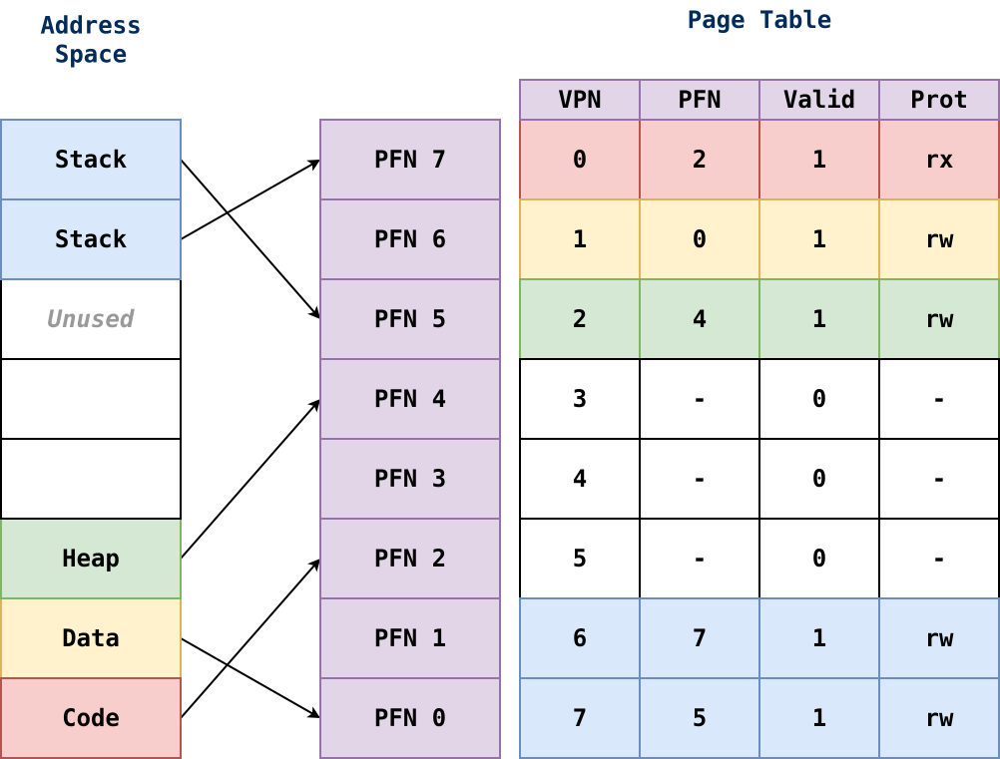
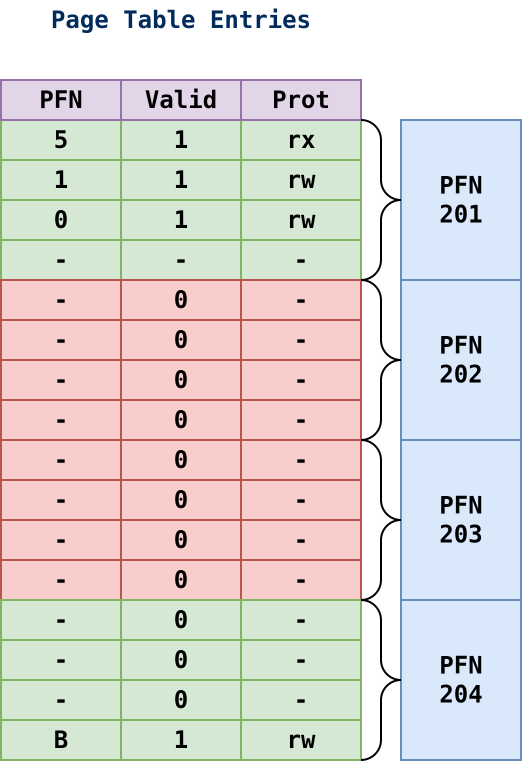
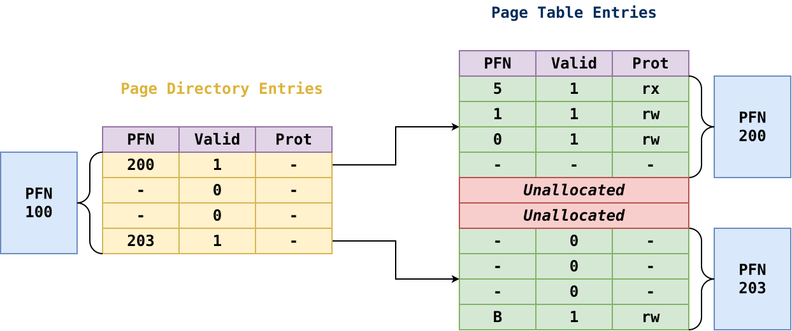

Review: Project 03¶

Review: Paging¶
-
Split physical memory into fixed sized Page Frames
-
Split virtual memory (ie. address space) into Pages
-
Each process has mapping of Pages to Page Frames in Page Table
-
MMU performs translation on-demand
-
Con: need
2memory accesses -> caching -
Con: Page Table stored in memory -> multi-level
Football Analogy¶

-
Divide Field into
10-yard boxes (pages). -
Assign offense, defense, and special teams (process) to different boxes.
-
Store translation in end zone (page table).
Paging: Problems¶

Observations¶
-
One page table per process.
-
Page table is stored in physical memory.
Problems¶
-
Each virtual address translation requires
2physical memory accesses.Cache (TLB)
Page table requires a lot of physical memory.
Multi-Level (Data Structure)
Page
0is usually invalid to catchNULLpointers!Memory: Hierarchy¶
Caches are important for performance!
Caching: Locality¶
Spatial Locality¶
This is the idea that if we access memory at address
x, then we will most likely access memory nearxsoon in the future.Accessing elements in array sequentially.
Temporal Locality¶
This is the idea that if we access an instruction or data item, then we will most likely access it again soon in the future.
Accessing same variable in a loop.
TLBs: Memory Access¶
Problem¶
Each virtual memory access requires two fetches from physical memory.
-
The first for the PTE to perform the address translation.
-
The second for the data itself.
Solution¶
Add a cache called the translation-lookaside buffer (TLB) to the MMU and use it to store address translations:
Upon virtual memory reference, check TLB for translation, and if present use that without consulting page table.
TLBs: Hardware Information¶
The MMU usually uses a fully associative cache (entries can go anywhere and the whole cache must be searched) and usually stores entries in the following format:
VPN -> PFN | Other BitsWhere other bits could be valid bits, protection bits, dirty bits, address space identifier, etc.
There may be multiple levels of TLBs where the smaller ones are fully associative and the large ones are set associative.
TLBs: Context Switch¶
On each context switch, the operating system must either:
Flush the TLB to mark all entries as invalid so that we don't use a wrong translation.
OR
Set the ASID register to the current PID so that the MMU knows which entries are valid.
TLBs: Handling Misses¶
Hardware¶
On miss, MMU walks the page table, finds PTE, and updates the TLB with translation as described previously.
x86, ARM
Software¶
On miss, MMU raises an exception, and triggers a trap handler; OS then looks up PTE and updates TLB.
SPARC, MIPS
Multi-Level: Page Table Size¶
Problem¶
Simple array-based (linear) page tables are too big and take up far too much memory.
-
We could make pages bigger, but then we would have to deal with internal fragmentation.
-
We could use a hybrid approach with segmentation, but then we would still have problems with external fragmentation (variable size page tables)

This is an example of an array-based (linear) page table:
-
Each PTE the PFN corresponding to the VPN and bits.
-
Because the page table itself is in memory, we can group sequences of PTEs into pages.
For instance, the first
4PTEs belong to the first page (of the page table), which is located at physical page frame200. -
This data structure has a lot of wasted space since we allocate pages for invalid PTEs.
Solution¶

This is an example of a multi-level page table:
-
A page directory, with page directory entries (PDEs) tracks whether a page of a PTEs is valid and which PFN it maps to.
-
Any invalid pages of the page table remain unallocated.
Multi-Level: Checklist¶
14-bitVirtual Address16-bitPhysical Address64byte Page Size4byte PTE/PDE-
How many bytes can we address?
# 2^VIRTUAL_ADDRESS_LENGTH 2^14 = 16KBHow many pages do we need?
# Number of Pages = Total Bytes / Page Size 2^14 Bytes x Pages / 2^6 Bytes = 2^8 = 256 PagesHow many bits in VPN?
# Exponent of Number of Pages 8How many bits in offset?
# Exponent of Page Size 6How much memory does page table require?
# Page Table Bytes = Number of Pages x PTE Size 2^8 x 2^2 = 2^10 = 1KBHow many pages does page table require?
# Number of Pages = Page Table Bytes / Page Size 2^10 / 2^6 = 2^4 = 16 PagesHow many PTEs per page?
# Number of PTEs per Page = Page Size / PTE Size 2^6 / 2^2 = 2^4 = 16 PTEsHow many PDEs in page directory?
# Number of PDEs = Number of Pages for Page Table 2^10 / 2^6 = 2^4 = 16 PDEsHow many bits in index page directory?
# Exponent of Number of PDEs 4 bitsHow many bits in index page table?
# Exponent of Number of PTEs per Page 4 bitsHow much memory does page directory require?
# Page Directory Bytes = Number of PDEs x PDE Size 2^4 x 2^2 = 2^6 = 64 bytesHow many pages does page directory require?
# Number of Pages = Page Directory Bytes / Page Size 2^6 / 2^6 = 1Multi-Level: Summary¶
Pros¶
-
Only allocates page table space in proportion to the amount of address space in use.
-
Easier to place into physical memory due to page-sized units.
Cons¶
-
Requires additional loads from memory to perform translation (time-space trade-off).
-
Adds additional complexity in order to improve memory usage.
Memory Hierarchy¶
Fast Registers Expensive, Small Cache RAM HD Slow Cloud Cheap, Large
-